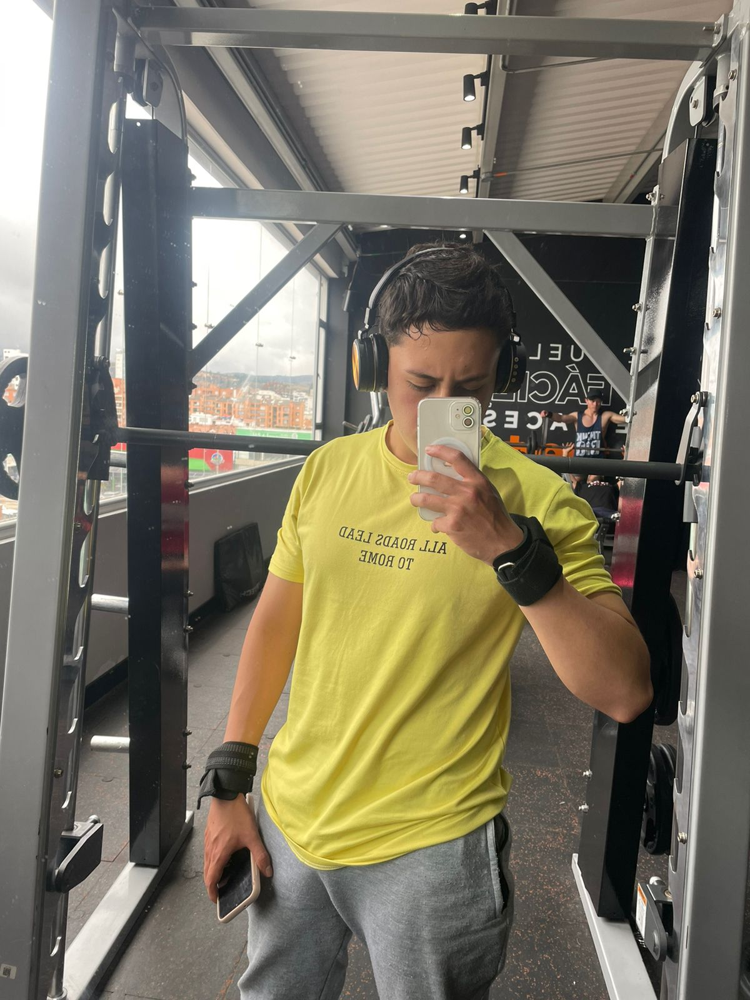

Mi nombre es Luis David Fuquen Escobar, tengo 21 años, actualmente vivo en la ciudad de Tunja, Boyaca, soy actualmente estudiante de ingenieria de sistemas de una universidad virtual, actualmetne mi nivel de estudios es tecnologo en gestion empresarial, trabajo en una clinica de la ciudad en el area administrativa, soy el menor de tres hermanos, actualmente vivo con mi hermana y mi madre, tambien tengo dos mascotas un gato y un perro. Soy una persona que le gusta aprender mucho, que le gusta estar en constante aprendizaje, soy una persona emprendedora, hace poco saque una mini linea de ropa deportiva enfocada hacia la mujer.

Mi ubicacion actual
¿Porque elegi realizar este curso?
Elegi realizar este curso, porque quiero complementar mis estudios de mi carrera universitaria con el fin de tener un aprendizaje mas completo, aparte son temas que me parecen super interesantes y que valen la pena de aprender, soy una persona que le gusta estar en constante aprendizaje.
Tambien elegi este curso para un futuro proyecto que tengo en mente, para aplicar estos conocimientos en los emprendimientos que tengo pensado realizar
¿Que aspiraciones tengo con este curso?
A pesar de que aun me siento que soy muy nuevo en el tema, he tenido compañeros que han pasado por el curso, y me han dicho que han aprendido muchas cosas que en otra instituicion no les han enseñado, asi que este fue una motivacion para mi, siento que este curso me puede brindar una muy buena formacion como programador,diseñador, el objetivo en general es poder manejar muy bien todos los temas de tal manera que el dia de mañana en el campo laboral pueda aplicar todos esos conocimientos aprendidos.
Mis hobbits favoritos
Ir al gimnasio a entrenar
Jugar futbol
Leer libros
Superacion personal
Educacion financiera
Nuevas habilidades
Habitos sanos
Escuchar musica
Hacer videos
Compartir con amigos
Mi cancion favorita
Especialmente la escucho cuando entreno, es una cancion que no tiene voces es instrumental, simpelente para ayudarme a concentrar en cualquier actividad, y motivarme.
Mi video favorito
Este video viene de una pelicula llamada Desafiando Gigantes en donde nos brina una enorme reflexion para la vida